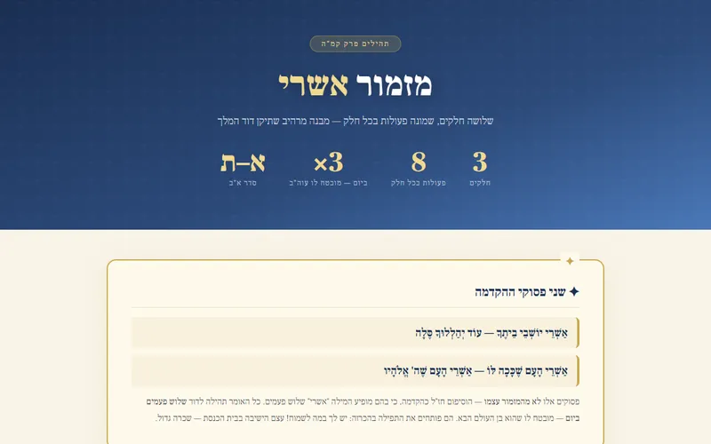
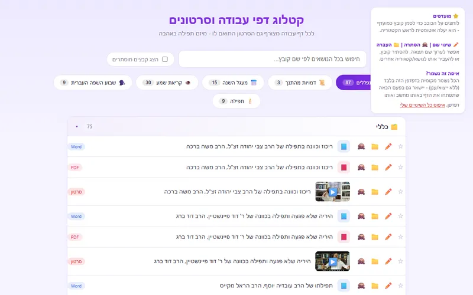
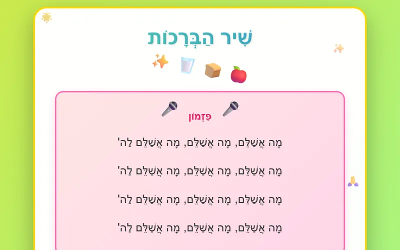
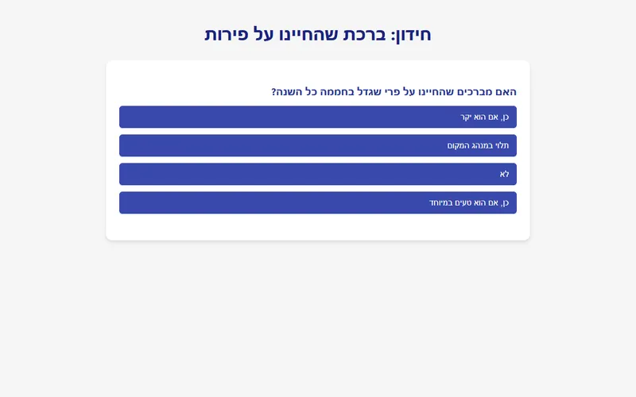
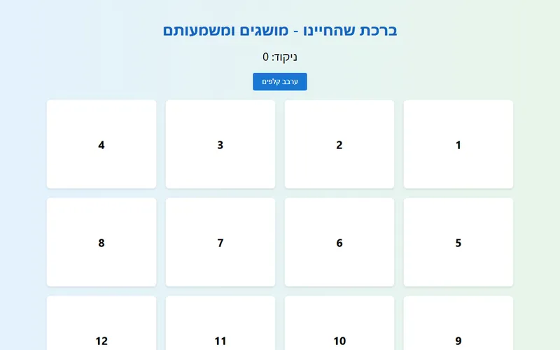

🕍
תפילה
מצגות ופירושים לתפילה – ברכות השחר, שמונה עשרה, הלל וברכת המזון
28 פריטים
תפילת שחרית (10)
ברכות השחר

באור אשראי
מבנה מזמור אשרי — שלושה חלקים, שמונה פעולות תהילים פרק קמ"ה מזמור אשרי שלושה חלקים, שמונה פעולות בכל חלק — מבנ…
ברוך שאמר - ישתבח
כל תפילת שחרית
ברכות קריאת שמע - מגון פירושים
תפילת שמונה עשרה
שמונה עשרה מבואר
18 תמונות מחולקות
תְּפִלַּת שְׁמוֹנֶה עֶשְׂרֵה - מגוון מצגות
הסידור השלם לילדים
שמונה עשרה (2)
דיני כריעה בשמונה עשרה
שיעור נפלא - על תפילה וכריעה בתפילה
תפילת שמונה עשרה – הסוד שבכריעה | הרב יהודה טאוב 🕍 שיעור תפילה • קול תודה תפילת שמונה עשרה הסוד שבכריעה מדוע כ…
הלל (8)
הלל שלם - עם פירוש
הלל של ראש חודש - עם ביאור
מצגות נוספות של ההלל
הלל - עם תמונות
הלל עם פירוש
המשך ההלל
כל ההלל עם פירוש = מדהים!
הלל - בפירוש הרב שטינהוייז
ברכת המזון (2)
ברכות ותפילה – כללי (6)
🎮 משחק🎮 משחק🎮 משחק
הקטלוג של מיזם תפילה באהבה
דפי עבודה, סרטונים ומצגות של מיזם תפילה באהבה
זמני תפילות קרית אתא
זמני התפילות בבתי הכנסת בקרית אתא

קטלוג דפי עבודה של תפילה באהבה
קטלוג דפי עבודה וסרטונים ⭐ מועדפים לוחצים על הכוכב כדי לסמן קובץ כמועדף - הוא יעלה אוטומטית לראש הקטגוריה. ✏️ …

שִׁיר הַבְּרָכוֹת
🌟 ✨ 🎵 🙏 שִׁיר הַבְּרָכוֹת 🍎 🍞 🥛 ✨ 🎤 פִּזְמוֹן 🎤 מָה אֲשַׁלֵּם, מָה אֲשַׁלֵּם, מָה אֲשַׁלֵּם לַה' מָה אֲשַׁלֵּם…

חידון: ברכת שהחיינו על פירות

ברכת שהחיינו – מושגים ומשמעותם
ברכת שהחיינו - מושגים ומשמעותם ברכת שהחיינו - מושגים ומשמעותם ניקוד: 0 ערבב קלפים המשך לקלף הבא